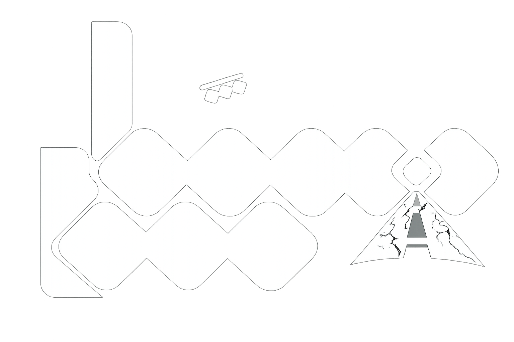

<aside>
  <div class="logo-section">
    
  </div>

  <ul id="dynamic-nav"></ul>

  <!-- Sidebar links are translated after dynamic rendering. -->
  <button
    class="logout-btn"
    data-ar="تسجيل الخروج"
    data-en="Logout"
    data-icon-ar="fa-solid fa-right-from-bracket"
    data-icon-en="fa-solid fa-right-from-bracket"
  >
    <i class="fa-solid fa-right-from-bracket"></i> تسجيل الخروج
  </button>
</aside>
